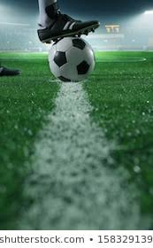

My main hobbies are playing soccer and reading books. I like reading books the most because whenever I get bored and wanna refresh myself, they just do so,
be it any kind of book, including thriller, fantasy or action and adventure. I like reading thriller books the most because they just take me to another world.
They are so immersive that when I start reading one, I can't stop reading it until I finish them.
Soccer is another thing that I like playing very much. And not only playing, I follow football competitions all over the world as well, be it the La Liga of Spain,
The Premier League of England, and hell, even the Indian Super League from India!!
